Subsistema de Memoria Compartida en Procesadores Multinúcleo (Coherencia caché)
https://ocw.uc3m.es/mod/page/view.php?id=2822
4.1 Introducción
En las memorias caché hay dos tipos de datos:
- Datos privados: datos usados por un único procesador
- Datos compartidos: datos usados por varios procesadores Estos datos pueden replicarse en varias cachés, lo que reduce la contención en el acceso a memoria, pues cada procesador accede a su copia local.
Coherencia: define el comportamiento de lecturas y escrituras en la misma posición de memoria y, por tanto, que todos los procesadores en un sistema multiprocesador tengan la misma visión de memoria
Consistencia: define el orden en que se ejecutan las operaciones de memoria unas respecto a otras y, por tanto, que esas operaciones se realicen en el orden del programa secuencial.
- En los sistemas monoprocesador el orden en que se actualicen las posiciones de memoria afecta a la memoria principal y a la caché
- En los sistemas multiprocesador el orden en que se actualicen las posiciones de memoria afecta a la memoria principal y a la caché de todos los procesadores.
4.1.1 Multiprocesadores UMA
En los multiprocesadores UMA (Uniform Memory Access o multiprocesadores simétricos SMP) todos los procesadores comparten una única memoria con la misma latencia para todos ellos. Tienen un número de cores pequeño (
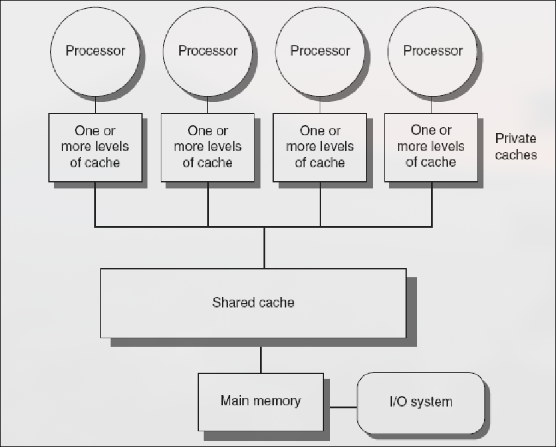
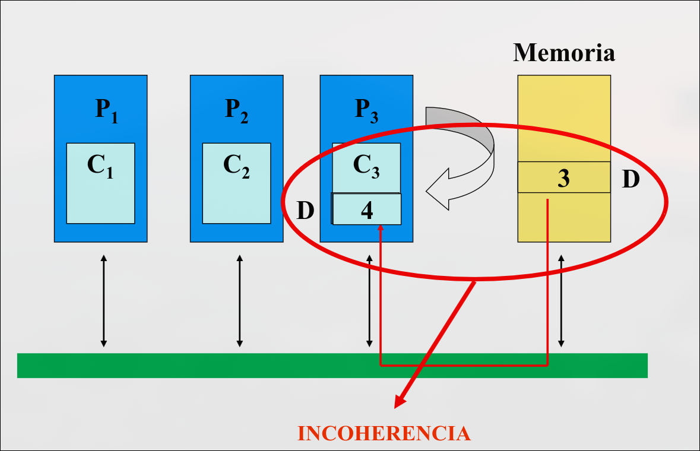
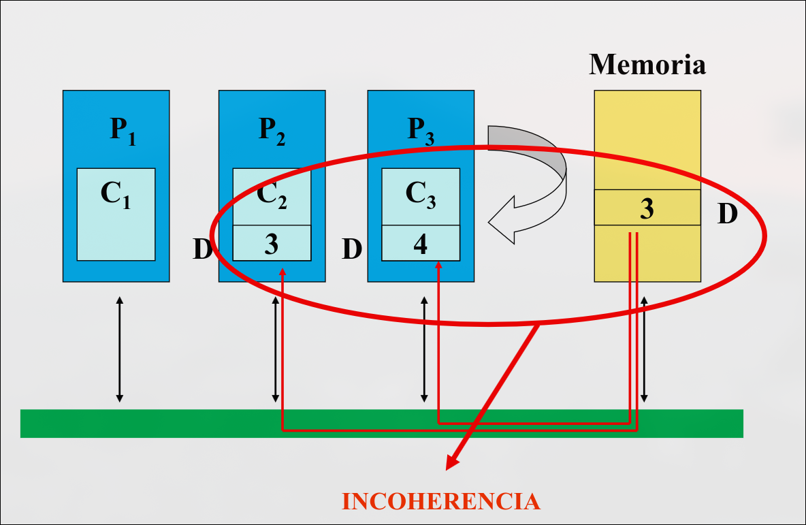
Condiciones para que haya coherencia
Un sistema de memoria es coherente si cualquier lectura de una dirección devuelve el valor más reciente que se haya escrito para esa dirección
-
Preservar el orden del programa: si un procesador
escribe la posición y luego la lee, el valor devuelto es siempre el valor escrito por . Se cumple si no hay escrituras por parte de otro procesador entre la escritura y lectura de -
Vista coherente de la memoria: si una procesador
escribe la posición y luego otro procesador la lee, leerá el valor escrito por . Se cumple si la escritura y lectura están suficientemente separadas y entre los dos accesos no hay ninguna escritura de -
Serialización de escrituras: dos escrituras de la misma posición por dos procesadores cualesquiera son vistas en ese mismo orden por todos los procesadores.
4.1.2 Métodos de Actualización de Memoria Principal
-
Escritura directa (ED o write_through): siempre que se modifica una dirección en la caché, se modifica la memoria principal.
- Cada escritura supone utilización de la red, por lo que es poco eficiente en sistemas multiprocesador, en los que varios procesos pueden escribir a la vez.
- Se produce incoherencia entre cachés, pero no entre caché y memoria
-
Post-escritura (PE o write back): cuando un procesador modifica una dirección de memoria sólo se escribe en la caché.
- El dato no se transfiere a memoria principal hasta que se eliminan de la caché, por lo que se puede escribir varias veces en un bloque de caché sin acceder a memoria principal.
- Se produce incoherencia entre cachés, y también entre caché y memoria.
Entonces, se producirán falta de coherencia tanto usando ED como PE. Posibles soluciones:
- Hardware específico.
- Otras soluciones: declaración de zonas de memoria no cacheables o con escritura inmediata (para dispositivos de salida)
- Solución estándar: protocolos de coherencia caché
4.2 Protocolos de Coherencia Caché
Los protocolos de coherencia caché hacen que cada escritura sea visible a todos los procesadores y propagan de forma fiable un nuevo valor escrito. Se basan en seguir la pista al estado de un bloque (línea) de datos caché compartido.
4.2.1 Métodos de Propagación de Escrituras a las Cachés
-
Escritura con actualización (WU o write-update):
- Si el dato es compartido: lo actualiza en todas las cachés que lo contengan (actúa como cache ED).
- Si el dato es privado: no es necesario actualizar en otras cachés (actúa como caché PE).
-
Escritura con Invalidación (WI o write-invalidate): cuando se realiza una escritura, se distribuye una señal de invalidación a través del bus y todas las cachés comprobarán si tienen un copia de ese dato. Las que lo tengan, invalidarán la línea que lo contiene.
- Es la solución más común
- Se usa en los protocolos de snooping
Diferencias
-
Múltiples escrituras a la misma palabra (sin lecturas por el medio):
- WU: una difusión de escritura cada vez
- WI: solo la primera escritura a la palabra genera una invalidación
-
Múltiples escrituras a la misma línea (en distintas palabras):
- WU: una difusión de escritura por cada palabra
- WI: solo la primera escritura a cualquier palabra genera una invalidación
-
Retardo entre escribir una palabra en un procesador y leer el valor escrito en otro:
- WU: es más rápido ya que el dato es actualizado inmediatamente en la caché del lector
- WI: es más lento ya que el lector es invalidado y no puede leer el dato hasta que reciba una copia actualizada
4.2.2 Tipos de Protocolos
-
Snooping o espionaje: cada caché tiene información sobre el estado de compartición de los bloques que contiene.
- Típico de los sistemas de memoria compartida con un bus común: los controladores caché espían el bus para determinar si tienen o no una copia del bloque compartido solicitado
- El tamaño de la información de coherencia es proporcional al número de bloques de la caché
- No escalan bien con el número de cachés del sistema porque generan mucho tráfico en el bus
-
Basados en directorios: el estado de un bloque de memoria física se mantiene en una única localización, el directorio.
- Típico de sistemas escalables: no necesitan que todas las cachés estén comunicadas por un bus común, sólo tiene que haber comunicaciones entre las cachés implicadas
- Información que contiene el directorio:
- Cachés que tienen copia del bloque
- Si ha sido modificado o no
- Por tanto, el tamaño es proporcional al número de líneas de la MP
- Es una solución centralizada: el estado de compartición de un bloque está siempre en la misma posición, por lo que el directorio es un cuello de botella. Las entradas del directorio pueden estar distribuidas en distintas memorias, lo cual mejora este problema, pero reduce la contención de memoria
4.3 Protocolos de Snooping
La invalidación de escrituras es una estrategia que garantiza que un procesador tiene acceso exclusivo a un bloque antes de realizar una escritura. Uso del bus de memoria para invalidación:
- El procesador adquiere el bus y difunde la dirección a invalidar
- Los demás procesadores espían el bus
- Cada procesador comprueba si está la dirección en su caché. Si es así, invalida el bloque que la contiene con el bit de validez. Así, no puede haber dos escrituras simultáneas, pues el uso exclusivo del bus serializa las escrituras.
4.3.1 MSI, Protocolo de Invalidación de 3 Estados
El protcolo MSI está basado en un sistema secuencial síncrono en el que cada bloque de caché tiene un estado que cambia en función de peticiones del procesador y peticiones del bus.
Posibles Estados de Cada Bloque de Caché
-
Modificado (M): este es el único componente que tiene una copia válida del bloque, el resto de cachés y la memoria tienen una copia no actualizada.
- La caché debe proporcionar el bloque si espía en el bus que algún componente lo solicita
- La caché debe invalidar el bloque si otra solicita una copia para modificarlo
-
Compartido (S shared): este bloque está presente en otras ubicaciones y todas las copias están actualizadas.
- La caché debe invalidar el bloque si otra lo modifica
-
Inválido (I): el bloque no está físicamente en la caché o su valor ha sido invalidado por haberse producido una escritura en otra caché
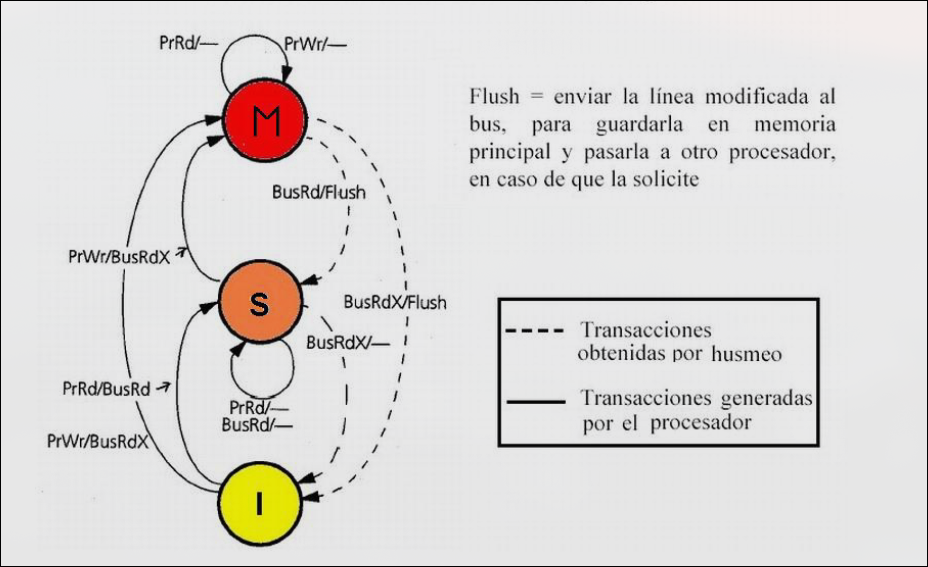
Peticiones que puede generar un nodo con caché
-
Petición de lectura de un bloque (PtLec): se genera como consecuencia de la lectura del procesador (PrLec) de una dirección que no se encuentra en la caché.
- El controlador de la caché pone en el bus la dirección que se desea acceder
- El sistema proporcionará el bloque donde se encuentra la dirección solicitada
-
Petición de acceso exclusivo a un bloque (PtLecEx): se genera como consecuencia de la escritura del procesador (PrEsc) en una dirección cuyo bloque en la caché se encuentra en estado S o I (incluida la ausencia del bloque).
- El controlador pone en el bus la dirección en la que se quiere escribir
- El resto de las cachés invalidan sus copias
- La memoria invalida su copia
-
Petición de postescritura (PtEsc): se genera cuando el controlador de caché reemplaza un bloque M como consecuencia del acceso a un bloque que no se encuentra en la caché
- El controlador de la caché pone en el bus la dirección del bloque a escribir en memoria y su contenido
-
Paquete de reconocimiento con el bloque solicitado por una caché (RpBloque): se genera cuando un nodo observa en el bus una petición de un bloque (que incluye lectura) si dicho nodo está en su caché en estado M (su copia es la única válida en todo el sistema).
Problemas asociados a la Invalidación
- Falsa compartición (false sharing):
- La falsa compartición se produce cuando dos variables sin relación entre ellas se encuentran dentro del mismo bloque caché (línea).
- Todo el bloque se transmite entre procesadores, aunque se esté accediendo a diferentes variables.
- Como consecuencia se producen fallos caché de falsa compartición: un procesador escribe en una línea compartida y la invalida, luego otro procesador lee una palabra diferente de la línea.
- Fallos de compartición verdadera (true sharing): Un procesador escribe en bloque compartido e invalida y luego otro procesador lee del bloque compartido.
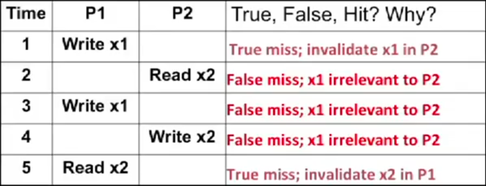
z4.3.2 MESI, Protocolo de Invalidación de 4 Estados
En MSI, al escribir a una línea en estado S, se debe invalidar en otras cachés y pasar a M, y podría requerir una escritura a memoria si el protocolo la necesita.
En MESI, si está en estado E, el procesador puede escribir directamente y cambiar a M sin necesidad de comunicarse con otros procesadores ni escribir en memoria.
Reduce tráfico de bus:
- El estado E indica que no hay necesidad de notificar a otras cachés.
- Esto reduce las transacciones en el bus y mejora el rendimiento.
Por eso, en el protocolo MESI, se define el nuevo estado Exclusivo.
Posibles estados de cada Bloque Cache
-
Modificado(M): esta es la única caché que tiene una copia válida del bloque y al memoria tiene una copia no actualizada
- La caché debe proporcionar el bloque si espía en el bus que algún componente lo solicita.
- La caché debe invalidar el bloque si otra solicita una copia exclusiva para modificarlo
-
Exclusivo (E): esta es la única caché que tiene una copia válida del bloque y la memoria tiene una copia que sí que está actualizada.
- La caché debe invalidar el bloque si otra solicita una copia para modificarlo
-
Compartido (S shared): este bloque es válido en esta caché, en al menos otra caché y en memoria.
- La caché debe invalidar el bloque si otra solicita una copia exclusiva para modificarlo
-
Inválido (I): el bloque no está físicamente en la caché o su valor ha sido invalidado por haberse producido una escritura en otra caché.
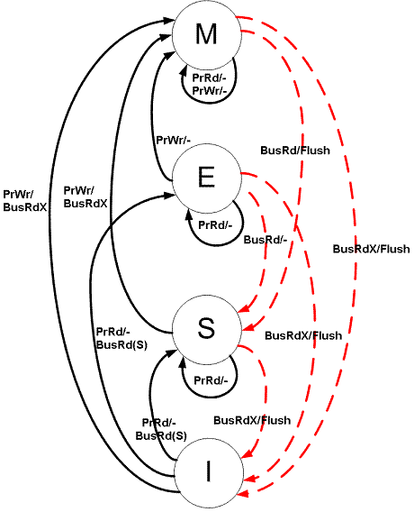
4.3.4 Problemas de Snooping
El bus de memoria compartida y el ancho de banda que requieren los protocolos de snooping es un cuello de botella para escalar los SMPs. Posibles soluciones:
- Usar redes de interconexión punto a punto con memoria en bancos-> tienen mayor ancho de banda
- Usar un protocolo basado en directorio
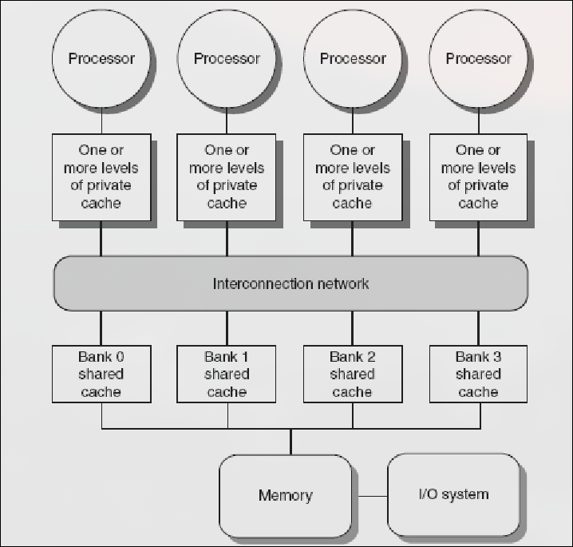
4.3.4 Intento de Explicación del Nuevo Sistema de Caché que Dora le copió a la UCM y que no explicó en clase (no fui a clase).
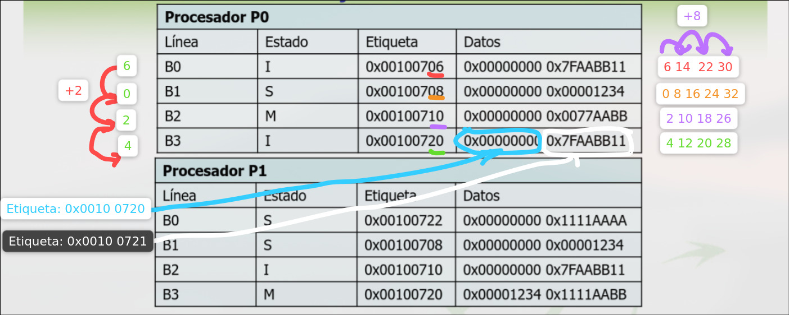
Se puede medio intuir que dada la tabla esta, no podemos distinguir con visto en fucomp acerca de la división de la instrucción para saber en que línea colocar los datos. Pero dada la imagen se puede razonar tal y como puse yo.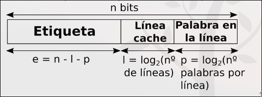
Otro ejemplo:
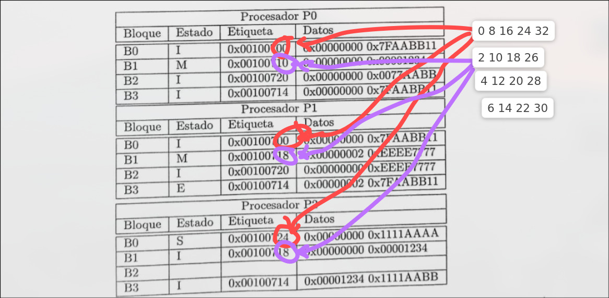
Si nos dice que es totalmente asociativa supongo que se puede sustituir por cualquier línea, a no ser que especifique algún tipo de algoritmo.
4.4 Protocolos Basados en Directorios
Los protocolos basados en directorios almacenan la información sobre el estado de compartición de cada bloque de memoria en un directorio. Reducen el tráfico a través de la red ya que se hace envío selectivo de ordenes. Se usan:
- Si la difusión es costosa
- Si se necesita mayor escalabilidad
- Multiprocesadores con una red escalable (como los de la foto anterior). El directorio local sólo almacena información de los bloques de la memoria local.
- Multicores con caché externa compartida. (L3)
Cada entrada del directorio informa de:
- Qué caches tienen copia del bloque
- Bits de estado del bloque en cada caché
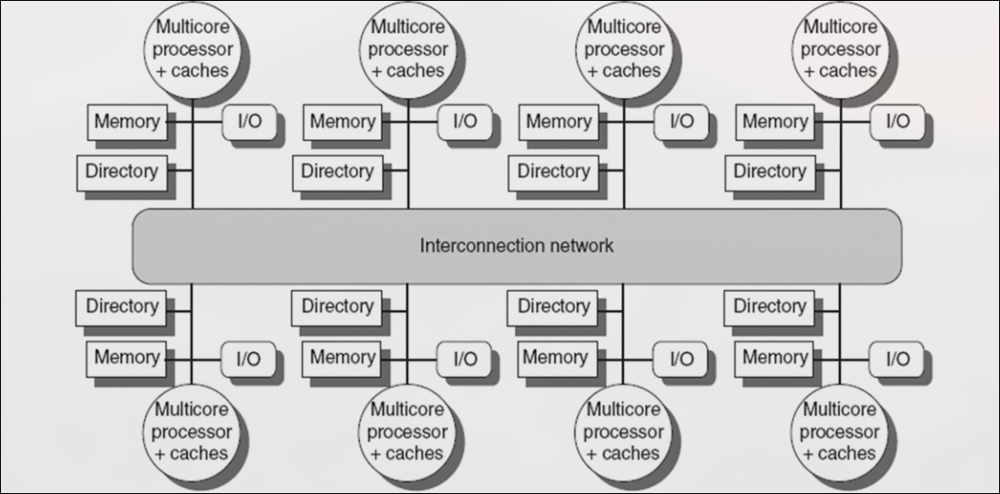
Transferencias Generadas
- En los protocolos de snooping: las transiciones de un bloque entre estados suponen difusiones
- En los protocolos basados en directorio: las transiciones de un bloque entre estados suponen transferencias punto a punto. Las transferencias las genera el controlador de coherencia caché de los nodos implicados
4.4.1 Estados de un Bloque en Caché y Directorio
- Cachés: consideramos una implementación MESI
- Directorio:
- Estado local: el bloque está actualizado en la memoria y no hay copias en ninguna caché
- Estado compartido: el bloque está actualizado en memoria y hay varias copias válidas del bloque en cachés. EL directorio informa de qué caches tienen distintas copias válidas
- Estado exclusivo: el bloque puede no estar actualizado en memoria y hay una copia en una caché en M o E. El directorio informa de qué caché tiene la copia
- Algunos estados de transición (pendientes de algún paquete para estabilizar su estado, ...).
4.4.2 Clasificación del Directorio
-
Directorio centralizado: una entrada para cada bloque de memoria con información de estado y de caches con copia. El directorio atiende a todas las peticiones, por lo que es un cuello de botella.
-
Directorio distribuido entre módulos de MP: cada módulo tiene un subdirectorio con la información relativa a sus bloques de memoria. Los subdirectorios atienenden en paralelo las peticiones de acceso.
- Directorio de vector de bits completo
- Directorio de vector de bits asignado a grupos
- Directorio limitado
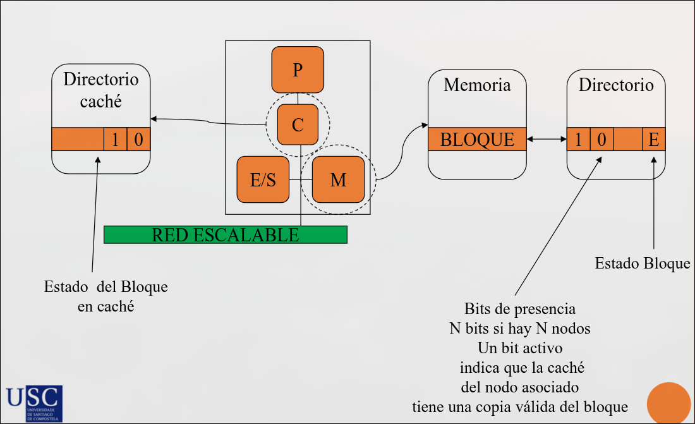
- Directorio distribuido entre módulos y cachés: además de distribuir las filas del directorio en MP, se distribuyen entre las cachés con copia del bloque.
- Directorio encadenado
4.5 Conclusiones
Los protocolos de snooping presentan problemas de escalabilidad Una alternativa son los protocolos basados en directorio:
- En SMPs (Symmetric MultiProcesors): directorio centralizado
- Multicore (como Intel Core i7): directorio centralizado
- En DSMs (Distributed Shader Memory): directorio distribuido